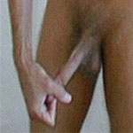

长度增加练习
这个练习非常简单，只是模仿了阴茎重物悬吊方法，但是没有悬吊法的危险。
如何起作用
长度增加练习就是通过持续“拉”阴茎5-20分钟的方法来增加阴茎长度。练习的时候，这个手法拉伸了阴茎中部的腱状肌，迫使这些肌肉在一段时间内自然拉长。虽然这个练习能有效地加长阴茎，但是不能使阴茎变粗。为了使阴茎变得又长又粗，请同时练习阴茎加长法和阿拉伯挤奶法。同时练习，有助于阴茎的血液循环，很快在长度和粗度上能有好的效果。在几个月内增加5公分也不是不可能的。
拉伸阴茎的效果
为使拉伸阴茎达到乐观的效果，你应该先弄明白阴茎是如何起反应的。阴茎内的细胞，充血后就会胀大。这些细胞可称为储血空间。这些细胞就位于勃起组织（也称为阴茎海绵体）内。你在拉伸阴茎的时候，其实是在拉伸整个阴茎，包括储血空间。一旦这一部分被拉伸，那麽，你的阴茎在疲软和勃起状态都会变得很长。这个道理是很简单的。那些认为阴茎不可能增大的人，就是因为不懂这个简单的事实。大部分人不瞭解的是，阴茎其实是身体上最容易变长变粗的部分，就是基于上面那个简单的事实。阴茎的唯一“目的”就是变大！你的阴茎勃起的大小取决于阴茎内部的细胞对大小的限定。只要通过自然的练习和拉伸，阴茎增大的效果是十分显著的。
请按照下列指导来练习：
採用坐姿，使阴茎处于疲软状态。抓住龟头，不要太用力，以免疼痛，但是要抓得紧一点。
往前拉伸阴茎，感觉阴茎根部有牵拉感。保持这一状态，数10下。重複以上步骤3次。
在大腿根拍打阴茎50次，以使血液回流到阴茎。
接下来，往左面拉伸阴茎，感觉阴茎根部有牵拉感。保持这一状态，数10下。重複以上步骤3次。
在大腿根部拍打阴茎50次。
往右面拉伸阴茎，感觉阴茎根部有牵拉感。保持这一状态，数10下。重複以上步骤3次。
在大腿根部上拍打阴茎50次。

经过这一过程，你应该感到阴茎被拉伸得很充分了，可以进入挤捏阶段了。初练者应在第一个月内按照这一方法练习。以后再进入高级阶段的练习。
长度增加练习 - 转动
抓住龟头，往前拉伸，直到有一种明显的拉伸感。
拉伸出来以后，往左面转动阴茎。不是拧阴茎，而是转圈。你应该在阴茎根部有明显的牵拉感。转动30圈，休息一会儿，再重複3次。
在大腿上拍打阴茎50次，促进血液回流。
往右面转动阴茎。步骤同上。
按摩阴茎达到半勃起状态，然后不间断地做30分钟阿拉伯挤奶练习，结束这一阶段。结束后，再做10分钟热敷。完成了这一练习后，你的阴茎看起来显得十分胀大，效果很好。经过几个月这样的练习，增长2-5公分不是不可能的。
由于在这个练习过程中操作手法很激烈，所以，在龟头上可能会产生红紫的血点或者血管的突出。不用担心，这是很正常的，会在练习2个星期后消失的。为避免这种情况，务必在练习前做10分钟的热敷练习。
许多人来信说，他们在做长度增加练习的时候，在龟头上涂上一点婴儿爽身粉，这样可以把龟头夹得更紧，以免在练习的时候，龟头从手指间滑脱。我也觉得确实是这样。如果你在练习的时候有这样的困难，可以试著用爽身粉。
许多男人发现在做长度增加练习时，阴茎不能保持疲软状态。这很正常，也很好处理，只要你觉得要勃起的时候，就马上停下来，等到勃起消退，再进行练习。如果在练习过程中实在是忍不住的要勃起，应该集中注意力想像一下，血液正从阴茎中流出。正确利用意念集中是很有效的。